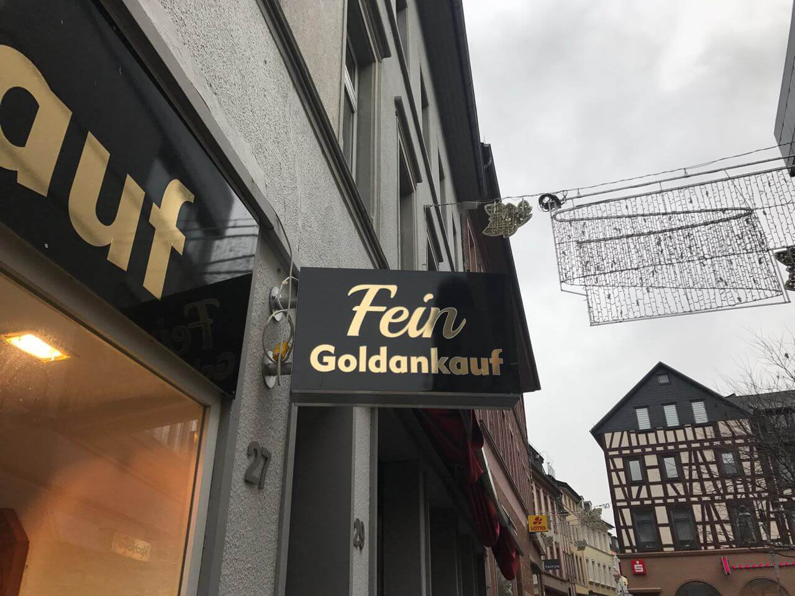
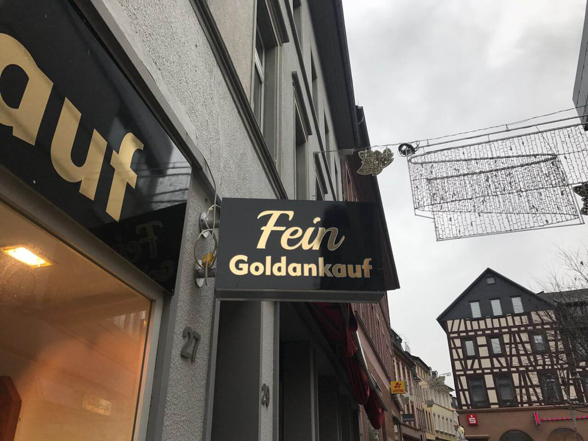

Der Nette
Goldankauf
In Ihrer Nachbarschaft
Guenstig
Vertraulich
Hochwertig

Guenstig
Vertraulich
Hochwertig

Bingen am Rhein. Unsere schöne Stadt am Rheinknie wurde bereits von den Römern sehr verehrt.
Neben dem Mäuseturm, der Burg Klopp und der erfolgreichen Landesgartenschau, glänzt
Bingen vor allem mit seiner idyllischen Umgebung.
Wir haben uns in dieser Stadt das Ziel gesetzt, ihre Anlaufstelle für den Ankauf und Verkauf von Schmuck,
Edelmetallen und goldhaltigen Gegenständen zu werden.
Wir sind ein lokales Familienunternehmen mit vielen Partnern und Freunden rund
um Bingen und dem gesamten Rheingau-Taunus-Kreis.
Neben Bingen, sind wir für unsere Kunden und Partner auch in Rüdesheim,
Bad Kreuznach, Ingelheim, Geisenheim, Rheinböllen und Östrich Winkel da.
Es spielt keine Rolle ob Sie ihren wertvollen Schmuck, eine antike Goldkette oder
andere Diamanten oder Edelmetalle verkaufen möchten - Wir stehen Ihnen vor Ort
mit unserem netten Team zur Seite. Daneben kaufen wir ebenfalls eine umfassende
Auswahl an antiken und teuren Luxusuhren an, z.B. Cartier, Rolex oder Breitling.
Wir genießen einen guten Ruf in der Umgebung, der sich in einer fairen Bedienung, einem soliden Goldpreis
und einer kostenlosen Beratung auszeichnet.
Kommen Sie vorbei und wir ermitteln den Wert Ihres Schmuckstückes - zu 100% unverbindlich - und mit
einem Lächeln auf den Lippen.
Ich freue mich sehr auf Sie.
Markus Karatas (Inhaber)

 


Ehrliche und Freundliche Beratung. Alle Prüfschritte erfolgen vor den Augen des Kunden. Wir verschwindern mit ihren Schmuckstücken nicht im Hinterzimmer.

Unverbindliche Bewertung. Wir ermitteln den Feingoldgehalt und die Echtheit ihrer Schmuckstücke kostenlos und unverbindlich mit zerstörungsfreien Methoden.

Barauszahlung ohne Wartezeit. Sollten Sie mit unseren Ankaufspreisen einverstanden sein, erhalten Ihr Geld umgehend in Bar ausgezahlt. Es gibt keine weiteren Fristen.


Bei uns können Sie nicht nur ihre alten Halsketten, Ohrringe oder Ringe loswerden sonder dazu auch, altes Zahngold oder Bruchgold. Es spiel keine Rolle ob handgefertigt, mit Gravur verziert oder abgetragen - wir kaufen ihren alten Schmuck.
Der Goldpreis wird in US-Dollar notiert und in Europa sind die Städte Zurich, Paris und London dafür
verantwortlich. Viele wichtige Faktoren spielen bei der Bestimmung des Preises eine Rolle. Zum einen der Ölpreis,
die verschiedenen Zinssätze, der Preis anderer Edelmetalle und manchmal sogar
auch die Emotionen der Anleger. Der Preis wird letztendlich durch das Marktgleichgewicht festgelegt.
Ist eine Inflation im Anmarsch, können wir sehr schnell eine hohe Volatilität auf dem Goldmarkt beobachten.
Ein wichtiger Einflussfaktor in Sachen Silberpreis, sind vor allem Arbitrage-Geschäfte wie z.B. Swaps. Außerdem spielt
die Indutrie auf diesem Markt eine sehr große Rolle.
Platin eignet sich durch seine Festigkeit für Schreibfedern, aber auch für verschiedene andere Schmuckstücke.
Platinpreise können sehr stark schwanken, da Platinbergwerke nicht in einer sehr hohen Anzahl verfügbar sind. (in Südafrika finden wie viele davon),
Platin ist ein eher seltenes Edelmetall.
Gerne erklären wir Ihnen vor Ort noch mehr dazu, bis dahin sollten Sie wissen, dass wir uns immer an den aktuellen Tagespreisen orientieren.
Wir geben alles, um ihnen mehr als nur die Marktüblichen Preise zu bieten und bei uns,
brauchen Sie keine Angst vor enormen Abschlägen zu haben.
In KG
genaue Preise
![[Most Recent Quotes from www.kitco.com]](http://www.kitconet.com/charts/metals/platinum/t24_pt_en_eukg_2.gif)
![[Most Recent Quotes from www.kitco.com]](http://www.kitconet.com/charts/metals/gold/t24_au_en_eukg_2.gif)
![[Most Recent Quotes from www.kitco.com]](http://www.kitconet.com/charts/metals/silver/t24_ag_en_eukg_2.gif)


Erreichbar von 09:00 Uhr bis 17:30 Uhr. Kosten für Gespräche varrieren je nach Mobilfunkanbieter.

Emails werden täglich überprüft und beantwortet. Sollte Ihr Anliegen dringend sein, rufen Sie einfach an.